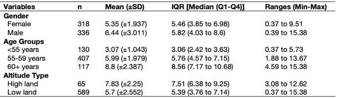
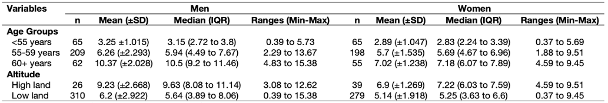

Bonus Creating table outputs in RStudio
This is a bonus section and so its entirely optional which can be studied at your own time. We are basically going to show you how to code out a table from RStudio to save you a lot time and energy, as well as potential grief with doing this in Microsoft Word.
Overall summary table by categorical variables
Remember this table in Week 2’s lecture (see slide 42 and 44)?

We are going to use the dataset Health Data.csv. Download it by clicking this link [HERE]
We are producing an overall summary of the lung capacity volume (LCV) which is broken down by the following categorical characteristics: gender, age groups and altitude type.
You can use the dplyr package to compute the desired summary statistics accordingly by the categories using the group_by() and summarize() functions. We will try this for gender first.
# loading package for 'dplyr'
library("dplyr")
# import the health dataset
dataset.eg <- read.csv("Health Data.csv")
# this code churns out the summary statistics for gender only
# in the summarize() make it report n, mean, sd, median, quantiles and min and max
# store first part of result in object called `gender_table`
gender_table <-
dataset.eg %>%
group_by(gender) %>%
summarize(n = length(initialLCV), mean = mean(initialLCV), sd = sd(initialLCV),
median = median(initialLCV), q1 = quantile(initialLCV, 0.25), q3 = quantile(initialLCV, 0.75),
min = min(initialLCV), max = max(initialLCV))
# show result for gender
gender_tableThis the result for gender:
> gender_table
# A tibble: 2 × 9
gender n mean sd median q1 q3 min max
<chr> <int> <dbl> <dbl> <dbl> <dbl> <dbl> <dbl> <dbl>
1 female 318 5.35 1.94 5.46 3.85 6.98 0.373 9.51
2 male 336 6.44 3.01 5.82 4.03 8.60 0.388 15.4 You can view the result as a data frame by running the code View(gender_table).
Now, we can repeat this for the age groups and altitude type variables:
ageg_table <-
dataset.eg %>%
group_by(agegroup) %>%
summarize(n = length(initialLCV), mean = mean(initialLCV), sd = sd(initialLCV),
median = median(initialLCV), q1 = quantile(initialLCV, 0.25), q3 = quantile(initialLCV, 0.75),
min = min(initialLCV), max = max(initialLCV))
altitude_table <-
dataset.eg %>%
group_by(altitude) %>%
summarize(n = length(initialLCV), mean = mean(initialLCV), sd = sd(initialLCV),
median = median(initialLCV), q1 = quantile(initialLCV, 0.25), q3 = quantile(initialLCV, 0.75),
min = min(initialLCV), max = max(initialLCV))
# view results
ageg_table
altitude_tableSee results for the age groups and altitude:
> ageg_table
# A tibble: 3 × 9
agegroup n mean sd median q1 q3 min max
<chr> <int> <dbl> <dbl> <dbl> <dbl> <dbl> <dbl> <dbl>
1 <55 years 130 3.07 1.04 3.06 2.42 3.63 0.373 5.73
2 55-59 years 407 5.99 1.98 5.76 4.57 7.15 1.88 13.7
3 60+ years 117 8.80 2.39 8.56 7.17 10.7 4.59 15.4
> altitude_table
# A tibble: 2 × 9
altitude n mean sd median q1 q3 min max
<chr> <int> <dbl> <dbl> <dbl> <dbl> <dbl> <dbl> <dbl>
1 high land 65 7.83 2.25 7.51 6.38 9.25 3.08 12.6
2 low land 589 5.70 2.55 5.40 3.76 7.14 0.373 15.4Before appending the tables together, in each table - i.e., gender_table, ageg_table and altitude_table, we will need to change the name of the first column to something consist across all tables for the appendage to work.
# change the first column name to something like `varname_cat`
colnames(ageg_table)[1] <- "varname_cat"
colnames(gender_table)[1] <- "varname_cat"
colnames(altitude_table)[1] <- "varname_cat"Next step is to append the tables using rbind() in the order of gender_table, ageg_table and altitude_table.
# stitch tables together using rbind()
descriptive.table <- rbind(gender_table, ageg_table, altitude_table)
# view output
descriptive.tableThe result looks something like:
> descriptive.table
# A tibble: 7 × 9
varname_cat n mean sd median q1 q3 min max
<chr> <int> <dbl> <dbl> <dbl> <dbl> <dbl> <dbl> <dbl>
1 female 318 5.35 1.94 5.46 3.85 6.98 0.373 9.51
2 male 336 6.44 3.01 5.82 4.03 8.60 0.388 15.4
3 <55 years 130 3.07 1.04 3.06 2.42 3.63 0.373 5.73
4 55-59 years 407 5.99 1.98 5.76 4.57 7.15 1.88 13.7
5 60+ years 117 8.80 2.39 8.56 7.17 10.7 4.59 15.4
6 high land 65 7.83 2.25 7.51 6.38 9.25 3.08 12.6
7 low land 589 5.70 2.55 5.40 3.76 7.14 0.373 15.4 Now, fun part - we need to bring the mean and standard deviation estimates into one column. In the same vein, we want the median and Q1 and Q3 results in one column, as well as the ranged values for minimum and maximum both to be in one column.
We can generate new columns within that descriptive.table object and use the paste() to render the results as a text string which can be pasted to the way see fit! You examine at the code carefully
# create a new column for mean and sd - paste items as 3.56 (±2.23)
descriptive.table$mean_sd <- paste(round(descriptive.table$mean, 2), " (±", round(descriptive.table$sd, 3), ")", sep = "")
# create a new column for median, q1 and q3 - paste items as 3.56 (1.23 to 5.63)
descriptive.table$IQR <- paste(round(descriptive.table$median, 2), " (", round(descriptive.table$q1, 2), " to ", round(descriptive.table$q3, 2), ")", sep = "")
# create a new column for min and max - paste items as 3.56 to 14.59
descriptive.table$Range <- paste(round(descriptive.table$min, 2), " to ", round(descriptive.table$max, 2), sep = "")
# see table
descriptive.tableLook at the later columns:
> descriptive.table
# A tibble: 7 × 12
varname_cat n mean sd median q1 q3 min max mean_sd IQR Range
<chr> <int> <dbl> <dbl> <dbl> <dbl> <dbl> <dbl> <dbl> <chr> <chr> <chr>
1 female 318 5.35 1.94 5.46 3.85 6.98 0.373 9.51 5.35 (±1.937) 5.46 (3.85 to 6.98) 0.37 to 9.51
2 male 336 6.44 3.01 5.82 4.03 8.60 0.388 15.4 6.44 (±3.011) 5.82 (4.03 to 8.6) 0.39 to 15.38
3 <55 years 130 3.07 1.04 3.06 2.42 3.63 0.373 5.73 3.07 (±1.043) 3.06 (2.42 to 3.63) 0.37 to 5.73
4 55-59 years 407 5.99 1.98 5.76 4.57 7.15 1.88 13.7 5.99 (±1.979) 5.76 (4.57 to 7.15) 1.88 to 13.67
5 60+ years 117 8.80 2.39 8.56 7.17 10.7 4.59 15.4 8.8 (±2.387) 8.56 (7.17 to 10.68) 4.59 to 15.38
6 high land 65 7.83 2.25 7.51 6.38 9.25 3.08 12.6 7.83 (±2.25) 7.51 (6.38 to 9.25) 3.08 to 12.62
7 low land 589 5.70 2.55 5.40 3.76 7.14 0.373 15.4 5.7 (±2.552) 5.39 (3.76 to 7.14) 0.37 to 15.38Now, discard redundant columns and only retain these pasted ones:
table_breakdown_by_cat <- descriptive.table[,c(1, 2, 10, 11, 12)]
# see final table
table_breakdown_by_catWe have obtained the desired table:
> table_breakdown_by_cat
# A tibble: 7 × 5
varname_cat n mean_sd IQR Range
<chr> <int> <chr> <chr> <chr>
1 female 318 5.35 (±1.937) 5.46 (3.85 to 6.98) 0.37 to 9.51
2 male 336 6.44 (±3.011) 5.82 (4.03 to 8.6) 0.39 to 15.38
3 <55 years 130 3.07 (±1.043) 3.06 (2.42 to 3.63) 0.37 to 5.73
4 55-59 years 407 5.99 (±1.979) 5.76 (4.57 to 7.15) 1.88 to 13.67
5 60+ years 117 8.8 (±2.387) 8.56 (7.17 to 10.68) 4.59 to 15.38
6 high land 65 7.83 (±2.25) 7.51 (6.38 to 9.25) 3.08 to 12.62
7 low land 589 5.7 (±2.552) 5.39 (3.76 to 7.14) 0.37 to 15.38This is how you make such tables in RStudio. Now, its all about exporting it to a spreadsheet, and copying and pasting it to Microsoft Word document where you can apply the cosmetic changes to make the table publication-worthy. Make sure that the code is indeed churning out the correct information.
Summary table by categorical variables further stratified
Do you also remember this table in Week 2’s lecture (see slide 43)?

This is the full code for create that table:
# overall but broken by a specific categorical variable
# keep female only
dataset.eg_female <- dataset.eg[dataset.eg$gender=="female",]
# keep male only
dataset.eg_male <- dataset.eg[dataset.eg$gender=="male",]
# create a table for female only
ageg_table.fe <-
dataset.eg_female %>%
group_by(agegroup) %>%
summarize(n = length(initialLCV), mean = mean(initialLCV), sd = sd(initialLCV),
median = median(initialLCV), q1 = quantile(initialLCV, 0.25), q3 = quantile(initialLCV, 0.75),
min = min(initialLCV), max = max(initialLCV))
altitude_table.fe <-
dataset.eg_female %>%
group_by(altitude) %>%
summarize(n = length(initialLCV), mean = mean(initialLCV), sd = sd(initialLCV),
median = median(initialLCV), q1 = quantile(initialLCV, 0.25), q3 = quantile(initialLCV, 0.75),
min = min(initialLCV), max = max(initialLCV))
colnames(ageg_table.fe)[1] <- "varname_cat"
colnames(altitude_table.fe)[1] <- "varname_cat"
descriptive.table.fe <- rbind(ageg_table.fe, altitude_table.fe)
descriptive.table.fe$mean_sd.fe <- paste(round(descriptive.table.fe$mean, 2), " (±", round(descriptive.table.fe$sd, 3), ")", sep = "")
descriptive.table.fe$IQR.fe <- paste(round(descriptive.table.fe$median, 2), " (", round(descriptive.table.fe$q1, 2), " to ", round(descriptive.table.fe$q3, 2), ")", sep = "")
descriptive.table.fe$Range.fe <- paste(round(descriptive.table.fe$min, 2), " to ", round(descriptive.table.fe$max, 2), sep = "")
table_breakdown_by_cat.fe <- descriptive.table.fe[,c(1, 2, 10, 11, 12)]
# create a table for male only
ageg_table.ma <-
dataset.eg_male %>%
group_by(agegroup) %>%
summarize(n = length(initialLCV), mean = mean(initialLCV), sd = sd(initialLCV),
median = median(initialLCV), q1 = quantile(initialLCV, 0.25), q3 = quantile(initialLCV, 0.75),
min = min(initialLCV), max = max(initialLCV))
altitude_table.ma <-
dataset.eg_male %>%
group_by(altitude) %>%
summarize(n = length(initialLCV), mean = mean(initialLCV), sd = sd(initialLCV),
median = median(initialLCV), q1 = quantile(initialLCV, 0.25), q3 = quantile(initialLCV, 0.75),
min = min(initialLCV), max = max(initialLCV))
colnames(ageg_table.ma)[1] <- "varname_cat"
colnames(altitude_table.ma)[1] <- "varname_cat"
descriptive.table.ma <- rbind(ageg_table.ma, altitude_table.ma)
descriptive.table.ma$mean_sd.ma <- paste(round(descriptive.table.ma$mean, 2), " (±", round(descriptive.table.ma$sd, 3), ")", sep = "")
descriptive.table.ma$IQR.ma <- paste(round(descriptive.table.ma$median, 2), " (", round(descriptive.table.ma$q1, 2), " to ", round(descriptive.table.ma$q3, 2), ")", sep = "")
descriptive.table.ma$Range.ma <- paste(round(descriptive.table.ma$min, 2), " to ", round(descriptive.table.ma$max, 2), sep = "")
table_breakdown_by_cat.ma <- descriptive.table.ma[,c(1, 2, 10, 11, 12)]
# merge the table_breakdown_by_cat.ma and table_breakdown_by_cat.fe to produce the table in slide 43
table_breakdown_cat_gender <- merge(table_breakdown_by_cat.ma, table_breakdown_by_cat.fe,
by.x = "varname_cat", by.y = "varname_cat")
# View output table
table_breakdown_cat_genderShow table:
> table_breakdown_cat_gender
varname_cat n.x mean_sd.ma IQR.ma Range.ma n.y mean_sd.fe IQR.fe Range.fe
1 <55 years 65 3.25 (±1.015) 3.15 (2.72 to 3.8) 0.39 to 5.73 65 2.89 (±1.047) 2.83 (2.24 to 3.39) 0.37 to 5.69
2 55-59 years 209 6.26 (±2.293) 5.94 (4.49 to 7.67) 2.29 to 13.67 198 5.7 (±1.535) 5.69 (4.67 to 6.96) 1.88 to 9.51
3 60+ years 62 10.37 (±2.028) 10.5 (9.2 to 11.46) 4.83 to 15.38 55 7.02 (±1.238) 7.18 (6.07 to 7.89) 4.59 to 9.45
4 high land 26 9.23 (±2.668) 9.63 (8.08 to 11.14) 3.08 to 12.62 39 6.9 (±1.269) 7.22 (6.03 to 7.59) 4.59 to 9.51
5 low land 310 6.2 (±2.922) 5.64 (3.89 to 8.06) 0.39 to 15.38 279 5.14 (±1.918) 5.25 (3.63 to 6.6) 0.37 to 9.45